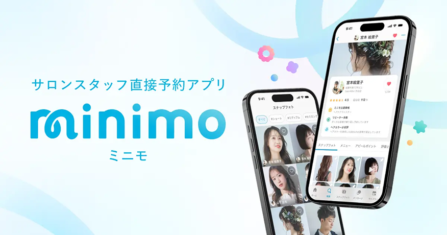
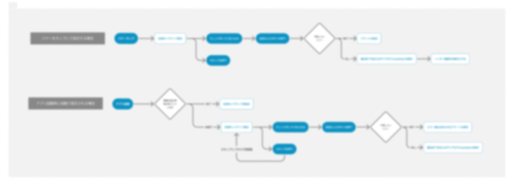
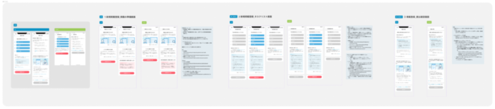
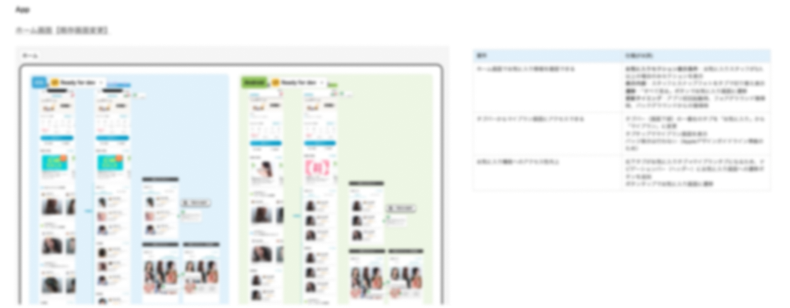
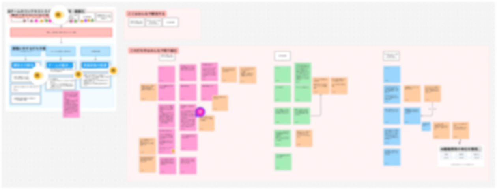
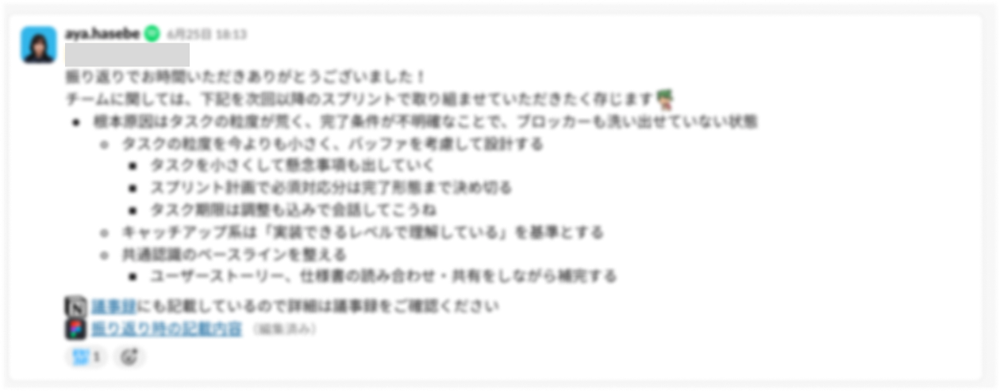

美容サロン予約サービス「minimo」の一般利用者向け・施術者向けアプリで、複数の施策を並行して設計。 施策ごとの目的や要件だけでなく、実装可能性、iOS / Androidの仕様差分、既存プロダクトとの整合性、 スケジュールや対応範囲まで確認しながら、チームが開発を進めやすい状態をつくることを意識しています。
一つの施策だけを深掘りするのではなく、性質の異なる複数の施策を並行して担当。 施策ごとに異なる課題や制約を整理しながら、企画から実装・リリースまでのデザインを進めています。
UIを作る工程だけではなく、施策が実装・リリースされるまでのプロセス全体に関わっています 不明点・疑問点は早めに対応して、使い勝手も技術的にも最良の形を考えていく
後から問題になりそうな論点を自分から提起。必要な関係者との認識合わせの場も設定します。
既存の再設計や他施策とのスケジュール競合、既存データとの整合性も含めて検討
レビュー時には範囲・観点・期日を整理し、レビュアーが判断しやすい形
すべてを一度の施策で対応するのではなく、後続施策との重複や二重作業を避けるため、「今回やらないこと」も含めて対応範囲を整理
リリース後に問題が残らない状態
キャンセルフローの改善では、選択項目のアコーディオン開閉というインタラクションについて、 iOS・Androidの両フレームワークで実現可能かの技術調査を依頼しました。 プロトタイプを添えて、再設計プロジェクト側の関係者にもコメントを求めています。
また、他施策と実装スケジュールがバッティングする可能性を事前に提起し、 「スケジュール次第では自分がデザインを引き継ぐ」と引き取り前提で確認。 デザイン完成後に制約を受け取るのではなく、先に手戻りの種を潰す進め方をとりました。


既存のチームでは、仕様書がなく各々のこう思う・クライアントやFigmaのどちらを正とするかの判断も揺れていた。施策の大筋の機能要件が決まっていた中、詳細の画面仕様が整っていない状況から画面の条件分岐を含む仕様書を作成
開発・QA期間の情報の拠り所になることを目的に対応を進行。 QA期間において、タスクの確認・推進を行い、曖昧な点があればつどつど言語化と調整を実施。

施策を進める中で、個別タスクの問題ではなく、チームの進行方法そのものにボトルネックになる場面が多く発生していた。まずは正社員同士で課題のヒアリング・段取り調整から、 業務委託を巻き込んでのチーム全体ので課題の整理と打ち手の検討を実施。そこから、チームにおいては、下記を基本方針として、PBIの基準に見直しまで運用フローに乗るところまで到達。


チームがAI駆動でスペックドキュメントを作成する進め方をとっていたため、その開発フローに則りクライアント開発を実施
仕様書・開発計画自体もskillsを元に生成されるため、その内藤のレビューから入り、変更内容をリポジトリにプッシュする。
実装の制約を後から受け取るのではなく、デザイン初期から実装可能性・スケジュール・リポジトリの作法まで確認することで、手戻りを減らせることはあり、いかにして自分から情報を取りにいくかは必要なフローに含まれていく
そのため、チームの進み方や他プロダクトのデザイン確認は本来の担当範囲ではないこともありますが、デザインの品質・チームの活動に寄与できることは先手を打って対応する
デザイナーの役割を「UIを作ること」だけではなく、デザインを通じてチームが正しく・早く意思決定できる状態をつくることまで広げて考えています。